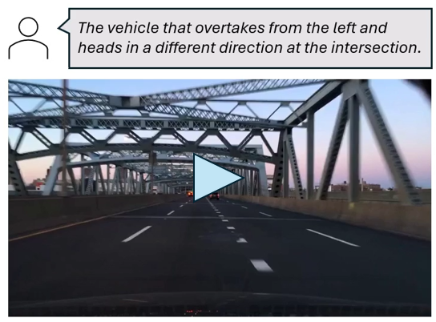

CoT-RVS: Zero-Shot Chain-of-Thought Reasoning Segmentation for Videos
International Conference on Learning Representations (ICLR), 2026
We propose CoT-RVS to extract the temporal-semantic correlation in videos with chain of thoughts and achieve the state-of-the-art performance for reasoning video segmentation.